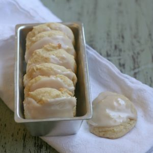

Vanilla Buttermilk Cookies

Description
Sweet and savory cookies made using vanilla and buttermilk.
Topped with creamy icing, these sure can be a perfect treat!
Ingredients
- 0.75 cups of softened butter
- 1.5 cups of sugar
- 2 eggs
- 2 teaspoons of vanilla
- 0.67 cups of buttermilk
- 0.5 teaspoons of salt
- 0.5 teaspoons of baking soda
- 3 cups of flour
Steps
- Cream butter and sugar.
- Add eggs and vanilla and mix well.
- Add buttermilk and mix well.
- Add salt, baking soda, and flour, then mix well until combined.
- Put spoonfuls onto a baking sheet and bake at 350 degrees fahrenheit for 12-15 minutes.
Return to homepage